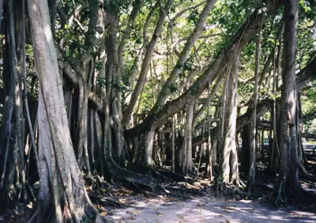

pranet · 出典付きの植物図鑑
ベンガルボダイジュ
Ficus benghalensis L. · Moraceae

ベンガルボダイジュ は、クワ科イチジク属の常緑高木。別名、バンヤン（バニヤン）、バンヤンツリー（バニヤンツリー）、バンヤンジュ、バンヤンノキ、ただし広義の banyan はベンガルボダイジュに限らず、ガジュマルなど他のイチジク属の樹木も含まれる名称であるため、近年では学名からベンガレンシスとも呼ばれる。多数の気根を下ろして生長することで有名で、インドの個体は世界最大の樹冠を持つ樹としてギネス世界記録にも登録されている。
出典: Wikipedia 日本語版「ベンガルボダイジュ」 · CC BY-SA 4.0
異名: Ficus banyana Oken, Ficus chauvieri G.Nicholson, Ficus cotoneaefolia Vahl, Ficus cotonifolia Stokes, Ficus crassinervia Kunth & C.D.Bouché, Ficus indica L., Ficus karet (Miq.) King, Ficus karet Baill., Ficus lancifolia Moench, Ficus lasiophylla Link, Ficus procera Salisb., Ficus pubescens B.Heyne ex Roth, Ficus umbrosa Salisb., Perula benghalensis (L.) Raf., Urostigma bengalense (L.) Gasp.
同定や利用は自己責任でお願いします。この図鑑だけを根拠に野生の植物を食べないでください。
出典
- 学名: World Flora Online Plant List 2026-06 · CC0 1.0
- 名前: Wikipedia の記事名と Wikidata · CC0 1.0（Wikidata）。記事名は事実
- 説明: Wikipedia 日本語版「ベンガルボダイジュ」 · CC BY-SA 4.0
- 食用・毒性: World Checklist of Useful Plant Species (Diazgranados et al. 2020, RBG Kew) · CC BY 4.0
- 分布: World Checklist of Vascular Plants (WCVP), RBG Kew, version 2026-06-04 · CC BY 3.0
このページは pranet のデータから自動生成しています。コードは MIT、データは項目ごとのライセンス（説明）。